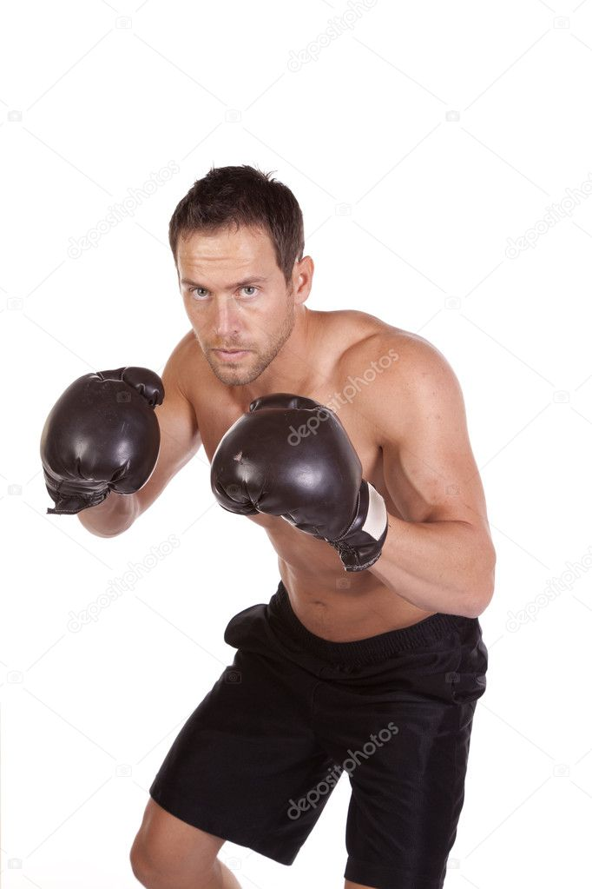
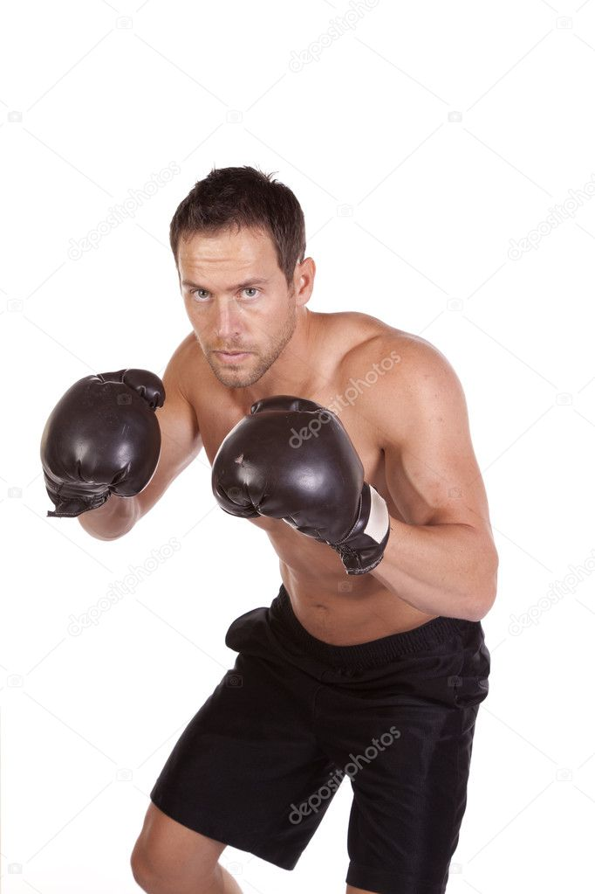

BOXING
by Mike Contra
Harris Duckrey boiled water for his morning tea on the embers of last night's fire. Setting the kettle on the smoldering pile of ash, he sent a carcinogenic plume up toward his face. He breathed in deeply. The radiation clouds had long deteriorated his nerves, leaving only the faintest semblance of sensory. There will be no burning of the throat or lungs here: a blessing and a curse.
He tried not to start fires inside if he could help it, the shack was all that stood for tens of miles in either direction. Built of timber and sheet metal, the structure was once no more than extra storage, a place to throw what couldn't or shouldn't be stored in the house. Now it housed the fleshy shell of what had once been the eldest Duckrey boy. He was one of the few who remained in the valley. Each day a struggle, toxic dust, and extreme isolation threaten to tear apart both his body and mind. But as the world changed so did he, bastardizing his form so he may grip to this place just a little while longer.
As the kettle prepared to sing its shrill song, Harris dragged his stiff joints toward the corner of the room where a missorted pile of belongings lay. Reaching within, he materializes a sturdy cigar box with “Duckrey” carved upon the front. His hands, swollen and scabby, much like the rest of his body, easily unhook the clasp. Opening the box reveals a relative trove of tea bags, exotic imports from every corner of the known world arranged in neat little rows. After a lengthy consideration, Harris removes a bag of English breakfast from its place in the far left corner of the box before lobbing it haphazardly into a chipped mug hanging from a nail in the wall. Just as he finishes his action the kettle begins its scream signaling its readiness to be pored.
Throwing a blanket over his shoulders, Harris and his mug turn the deadbolt and twist the knob opening up to a view of the valley. Situated beyond the door stands several yards of cleared, but not by Harris, cracked ground. When he’d initially stumbled upon the shack it’d been inhabited by a man and his daughter, but she’d lost her mind and he couldn't live with that so The Wanderer had led them both away. Finding the silver lining, Harris moved in shortly thereafter, a monumental improvement from the rat-infested tunnel he’d been in previously. He’d now lived there far longer than the girl had even been alive, although the specifics of it were long lost to him. His reflection could no longer be trusted and he’d lost too many days in his head to count. No matter to him though, you only count the days if there’s a reason to. Some semblance of hope you’ll someday need to remember how long it had been. None of that could be found here, the world was too far gone to bother with that sort of thing.
Where the solid ground ended, the thick ash began. Made up of the rotted remains of the previous world, it melded and fused into a jumble of toxic tar. In the summers it was known to soften, emitting a chemical smell so foul it would curdle even the most iron of stomachs. Today though, in the early morning hours of a late fall day, the lumpy expanse was tough and near oderless. This was what the world was now, almost completely covered in the thick ash of yesterday.
The sun rose higher and the mug drew emptier, but just as Harris was about to call it and go back inside, a figure appeared on the horizon. With cloth of brown and turquoise that hung loosely from his frail body; The Wanderer came. The sun, now at a respectable height, gleamed brightly off of the single remaining cracked lens in his beaten old wireframes. It has been the better part of the year since The Wanderer had come to visit Harris, the longest stint in nearly a decade.
“Do my aging eyes deceive me,” Harris bellowed across the valley, “ or is the great Wanderer on the horizon once more?”
“No such deceit here, old friend,” said The Wanderer, “do now pour me a glass of water, we have much to discuss.”
Harris retrieved a glass from his pile, filling it with water he had pumped from the well the previous day. Returning outside, Harris handed over the drink to The Wanderer who had leaned his back against the shack to rest. He had aged. Unlike Harris, whose appearance hadn't changed in years, The Wanderer seemed to be growing older at twice the normal speed. Deep wrinkles and rotted moles defined skin that held limply from his face as if begging to be peeled off and replaced. Still, though there was no mistaking those emerald green eyes, under all that mess he was undoubtedly the fresh-faced attorney Harris had met in his youth. The one that had wowed His father all those years ago, with his ability to stretch and mold the law to his liking. Once his father's closest confidant and advisor, he now was The Wanderer.
The Wanderer drank deeply, so deeply in fact that water began to run down the sides of his mouth spilling down off his chin and onto his clothes. After a moment or so of this, he pulled the glass from his mouth and began gasping for air.
“The Averys and the Moleviches are dead,” he finally managed after catching his breath, “slain by raiders, or so the thick ash tells me.” This catches Harris off guard, losing his will to stand he takes a spot next to The Wanderer. The Averys and the Moleviches were the only remaining families in the valley. Although it had been several years since Harris had taken the journey to see either, he had taken some solace in their mere existence. Now that they were gone, it would be just him and The Wanderer for hundreds of miles in either direction.
“I've come to warn you,” said The Wanderer after some time, “you must leave this place. These foul creatures seem bent on ensuring they and the thick ash are all that remain in …”
“I will not just leave my home, Wanderer.” It’s much more forceful than he had intended but Harris needed him to understand. “I'm far too old now to be leaving the valley, I will die here if I must. If not later, then now is fine I suppose.” With his piece properly said, Harris turns to return inside. The Wanderer knows better than to follow him so just remained where he was. With that, Harris Duckrey and The Wanderer finished their final conversation.
Harris hadn't hardly slept in the month since The Wanderer had visited him. When he did, the nightmare that permeated his mind felt more like prophecy than fiction. So vivid was the feeling of leather on his hands and sweat against his brow. The sight of his adversary against a backdrop of ropes made him want to hurl, and yet he couldn't help himself from bobbing and weaving his way around the ring. The actions felt familial as if it was the act that had raised him and not the man who’d taught him the act. The same man whose corpse had sent him fleeing his family home all those years ago. This was the same man standing across from Harris in the ring—glove on Glove, blood on blood. Not a dream but a memory, if not from now then maybe later.
It was on one of these sleepless nights that the howling began. At first, it was so faint that Harris found himself asking if what he heard was not insanity setting in. As the nights drew on, it became clear that what he was hearing came from a mouth. A mouth connected to a body, controlled by the mind of something that wished him dead in the ground. It was a haunting feeling that did nothing to quell his insomnia, only souring his mood further.
The howling subsided sometime in late December. Harris, having sleeplessly listened to it grow closer, was wholly unsurprised when, three days after its departure, he began to hear shuffling outside the shack. Noiselessly, he rose from his bed-roll and moved toward the pile of his belongings. The tip of his middle finger had just barely grazed the cold metal of the yellow tire iron when the assault began. A single banging kick sent the shack door flying off its hinges and into the chipped mug, knocking it off its nail. The latch lock exploded into several misshapen chunks, their metal clanking reverberating long after the initial crash of the door had subsided. Moving his hand from its spot shielding his face, Harris now gazed upon the group of raiders who stood in his doorway.
With long narrow snouts and hunched posture, the raiders resembled hairless wolves. The three of them stood at nearly 7ft tall, towering over Harris who had been thrown off-kilter in the commotion. In a move that had been rehearsed, two of them charge Harris’s position on the floor. Their gaping mouths, briefly illuminated by the moon's light, reveal strands of brown saliva running down jagged rotted teeth. Having chosen his target, Harris gripped the tire iron and swung his weight to both bring himself up and the tire iron across the mouth of the leftmost intruder. With a satisfying crunch, the tire iron connects with the lower jaw smashing it completely. A mess of blood, teeth, and brown saliva splatter against the far wall with a gummy-sounding thump that can only be rivaled by the blood-curdling scream the mutilated fiend lets out. Before he has time to admire his handiwork, the other raider reaches Harris and stomps down smashing him back into his place next to the pile. What follows is a barrage of kicks and stabs with what Harris later realizes is a series of sharp rocks the raiders had tied to their hands. After a while of this, the beast turns his attention back to his comrades but not before pitching the tire iron across the room.
“How could you be so naive as to charge ahead like that, Blossom,” snarls the one closest to Harris.
Glub ceurk kieop cried the bloody bubbling hole where a mouth had once situated itself on Blossom’s face. He continued to craddle his limp hanging jaw in his hands which now were streaked with dark red blood.
The one seemingly surveying the ordeal retorted what Blossom could no longer: “Speak not with scorn to your brother, Bubbles. He is younger and has now paid a great price for his unworldliness.”
In a show of his newfound noiselessness, Bubbles dramatically wrapped both claw-covered hands around his snout and bowed in feigned respect. Distracted with the thespian-level display, neither brother noticed as Harris rose, wooden cigar box in hand. Harris delivered a powerful kick to the back of Bubbles’ leg, snapping the bone and lining up his head with the natural side swing of Harris’ arm. With a blow like thunder, Harris smashes the cigar box over his head sending blood and splinters across his face. If the splinters cut him he wouldn't have known, there was too much blood on his face to determine if any of it was his.
Jfughh slrqhuee spittles out Blossom. So taken aback, he’d lost his footing and had thrown his arms back to catch himself exposing to Harris his previously unseen craftsmanship. Unmoved and Unfazed, the final unnamed raider remains where he stood in the doorway.
“What. a. Hypocrite.” the raider says finally, his eyes remaining unmoved from where Bubbles had stood. “How are you going to lecture poor darling Blossom on running ahead, and then make a rookie mistake like turning your back on someone who’s still breathing.” He shakes his head, “Tskk, amateur hour,” it suddenly occurs to Harris that while the raider's previous statement had been to no one in particular, that last part was said to him. His once glossy eyes now were focused in on Harris, he continued: “Well if you're going to continue brutalizing my brothers, then I feel formal introductions are in order.” He stretches a meaty hand towards his jawless brother who had begun to add salty tears to his gorey equation, “Blossom.” He moves his hand now to the one at Harris’ feet, “Bubbles.” As he moves his hand back towards himself for his final introduction, they catch the light, revealing to Harris that unlike his brothers he lacks the rocks on his hands. “And I…,” he says finally gesturing towards himself, “...am Buttercup.” Without ever losing Harris’ gaze, he takes a bow, snickering the whole way down.
“OK, now your turn,” says Buttercup, entirely unbothered by the carnage before him.
At that moment Harris becomes acutely aware of the head rush he is experiencing, most likely due to blood loss. it takes every ounce of mental will not to pass out there. So when Buttercup asks his question it is not Harris that responds but rather his mouth. Without an ounce of thought, a long-forgotten bramble begins to spill from his mouth: “I am Harris Duckrey, eldest of the Duckrey boys, and future heir to the Duckrey Fittings…” “Do you remember our names?” This interjection catches Harris off guard, he was still recovering from not just the shock of his blood loss but also the regrettable monologue that had been spewing from his past just moments ago, and now he had been interrupted mid-speaking over something as trivial as dying men's names.
“Do you?” A brown toothy smile had crept its way across Buttercup’s face. “I understand if you don't, there are three of us after all.” Raising his large hand again, he briefly places it across his face as if to stifle a laugh. “I think I can help with that, give me just a moment.” Before Harris finds the words to voice his confusion, for the first time since arriving, Buttercup makes his way from the doorway into the dark shack. Coming to the place where Blossom lies, he kneels to face his mangled brother.
“You are my bother,” Buttercup addresses Blossom, “and you served me well. What awaits on the other side is far more hopeful. You will someday thank me.” With that final note, Buttercup reaches one of his beefy hands up and rips what's left of Blossom’s dead jaw off his face. Blood sprays and shoots its way across the two brothers as Harris looks on in perplexed horror. Blossom wide glossy eyes scanned the room directionlessly, Harris understood that he was mostly gone now, the brain was barely functioning, but when those eyes did eventually land on him he couldn't help but sense some level of cognitive thought still taking place. Your fault they seemed to scream, your fault. In a final display of vicious mercy, Buttercup took what was left of the youngest brother's head and bashed it into the wall, Blossom's eyes finally stopped moving signaling to all present that he was now truly dead.
It was then, standing there, that Harris found brief clarity in the performative nature of it all. So exaggerated, so performative, so distracting. So distracting in fact that he hadn't noticed the raider at his feet who had had time to wake up and regain his bearings. In what must have been all his remaining strength, Bubbles took a jagged rock-covered hand and sliced Harris across his center. It was the first time in years he’d felt something so truly painful. Up until this point, every punch, kick, or stab had amounted to nothing more than dull thumps, his rotted nerves protected him from the searing pain that was post-humanity. But this, this had broken through, figuratively and literally ripped him through the core. For the first time in years, Harris Duckrey felt human, and like he had long been living on borrowed time.
Despite the pain, and the introspection brought with it, Harris could react fairly quickly. It was not his strongest kick, but it did what it needed to, knocking the wind from the already depleted Bubbles. From there it was just a stomp, bringing the heel of his foot over and down he connected with the thin layer of skin that separated the smogish winter air from Bubbles’ spine. One crunching kick was all it took, he should be paralyzed, but that wouldn't be where it ended. If Harris knew one thing it was that mutants like them found a way. Returning to the pile one final time, Harris produced his tea kettle. This would be the last time he used it, no sense in boiling water where he’s going. He zeroed in on Bubbles once more. Harris completely turned his back to Buttercup, if he hadn't entered the fray yet he wouldn't now, a second sneak attack wouldn't quite garner the same audience reaction as the first. Bringing the kettle down hard, Harris began his onslaught. focusing on the right eyesocket, bashing and barreling until fleshy pulp gave way to meaty brain matter. When he finally relented, the kettle was dented in on the side but not as much as Bubble Skull, the crater where a face had been now pooled over with blood and bone.
It was then maybe that Harris noticed the laughing, at first he mistook it for his Father’s, dull and deep but still genuine, but it wasn't his. Buttercup had made his way through the door, he wasn't even trying to contain himself. Into the pale moon, it seemed to backlight him, adding some cosmic emphasis. Harris had proved himself, if he wanted to Buttercup would let him die here. They both understood time was slipping for him already, no need to humiliate a dying man. But if he so chose, that backlight signified an invitation from the universe, a chance to fulfill a prophecy. So the corpse of Harris Duckrey left the shack, where he had lived a majority of his life, for the last time.
The cleared space was their ring. The breaking morning, their lights. The thick ash, their audience. As the sun began to rise over the valley the two of them took their positions on either side. Harris was a boy again, he was about to die. Across from him stood his father, his adversary. Blood swelled in his ears and bile bubbled in his throat, yet he felt alive. The bell finally struck, and Harris Duckrey took his step forward and began his bob and weave.
Minds wired the way Harris’s were had a funny way of slipping. His body remained in the present, dancing its final jive, but his mind decided his studies were more important. He was 12, off the heels of his first major valley win, only it hadn't been boxing, it’d been a poem he’d written. This had moved something within him, the recognition of a job well done, he was all in. He focused on his studies, chasing new heights, he wanted that win again.
“Come, you have spared,” it was his father, his busy schedule hardly allowed visitation, but boxing was the exception.
“Sir I’ve got books that ne..,” the words had barely begun to finish when the stern hand of his father had swatted him half out of the chair.
“Defy me more, please, you've already failed me enough,” his tone remained unchanged but the words themselves were enough to sting Harris. The sting seated itself in the hearts and minds of both Harris’, thick skin does nothing for elephant minds.
Why now, the present seemed an odd choice for this memory, he was often hit as a child, on and off the ring, usually by his father although in the days following bouts, when his hands would get too stiff, he’d have an associate of his do it, sometimes I’d be a shareholder, once or twice a visiting socialite, more then often his younger brothers would be allowed a good swing, but Harris’ favorite was always Grant Stupbill, his fathers attorney. Stupbill hated having to do it and often had to be told to go again as his slaps were deemed too soft. This pity alone, unknown in the Duckrey household, he cherished it, kinship and family, this was the closest he had. Progress hurt, the people that push you love you, but the people that pity that, that understand the pain that comes with not just existence but existence in motion, a pity fueled by movement, they know they are hurting him, making him stronger, breaking him, and they are sorry. His mind moved farther into the abyss.
is 20, and he’s built something for himself, not poetry but boxing, he’s successful and well-known, but it is not the same. He sits across from his father's attorney, they’ve just returned from a fight abroad, and he knows this memory. His mind slips, he’s still in the carriage but it's no longer the attorney, his appearance is unchanged but Harris can tell it’s no longer him.
“Grand fight, your father will be most proud with these winnings,” says the Wanderer. Harris just continues to stare blankly at where the attorney had been, it occurs in the back of his brain he is in immense pain but unsure which version it is he decides to leave it be. His brain is rotting, no need to break the facade, he’s here so let him live it, let them both.
“When we arrive back I’d be most grateful if you could take a moment and help me remove my bag, I'm afraid my strength isn't what it used to be,” this just about sent Harris over the line. He wanted to scream, he wanted to howl, there won't be time for bags, we will return to untold desolation and horror, we will both flee out into the world, we will lose our minds and bodies choosing our rotting grounds, mine will be in the center of the valley, my birthlands, yours will be time itself, you'll die and so will i.
“Stupbill, I have a query,” says Harris. It's uncharacteristic of him to voice what he’s thinking but he knows his traveling companion can hear the madness on him, the facade has broken.
“Do tell,” says the wanderer.
“Would you hit me,” the memories make this line of questioning hurt his head, he’s going off script, dont tell the mutants.
“Why, of course, I would,” the wanderer’s tone holds no apprehension whatsoever, “the ash changes us, if I wasn't willing to I wouldn't still be here.” This was what he needed to hear, his mind clicks and gears start to spin, he’s slipping again, this part of his life is now over.
Harris wakes in a pool of his vomit, it’s daybreak and he’s got mere minutes until he has completely bled out. Rising to his shaky feet he takes in the scene before him, blood speckles and pools its way across the ground in intricate nothings of deep red. Beyond it lays a heap of skin, breathing shallowly in the new light. Harris’ mind, now lacking in both sanity and oxygen, beckons him forward toward the beast. But it’s not a beast anymore he tells himself, nor is he a boxer anymore. They’re both doomed, he and his father who now lay across from him, served his purpose but now they're doomed. Harris lies back down, he takes some comfort in his choice to do so, he’s showing apprehension, he lived his life and now it's done, scores don't matter if you're already done playing. Harris passed.
The new day had fully broken by the time the wanderer appeared on the horizon again. Slowly making his way to the shack, he took his time digging through his robes in quiet precision, there would be enough sound for today without him adding to it. Stepping across the last bank of ash, the wanderer bent down and snagged the arm of Buttercup, dragging him to the center of the cleared lawn. One by one, the wanderer dragged each member of the previous night's brawl out into the center, eventually he had stacked all 4 corpses neatly into a pile. Reaching within his robes he then produced a box of matches, flipping it open he took one out, striking it before adding it to the pile which quickly combusted. Switching his attention over, the wanderer made his way to the shack, without a second of hesitance the wanderer struck another match and in an instant had lit it ablaze. His part now done, the wanderer now turned on his heel and left the valley for good. He would, in time, join them amongst the thick ash, but that time wasn't yet, so he made his way back into the horizon. The Valley stood quiet, the bell had rung.
The end.
Sweet Refrence images
 


Other Cool Things by Mike Contra
HOME
CONTACT ME